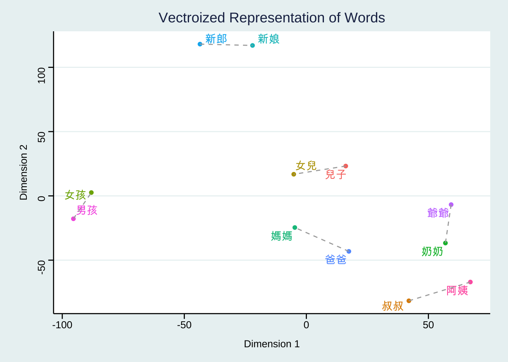
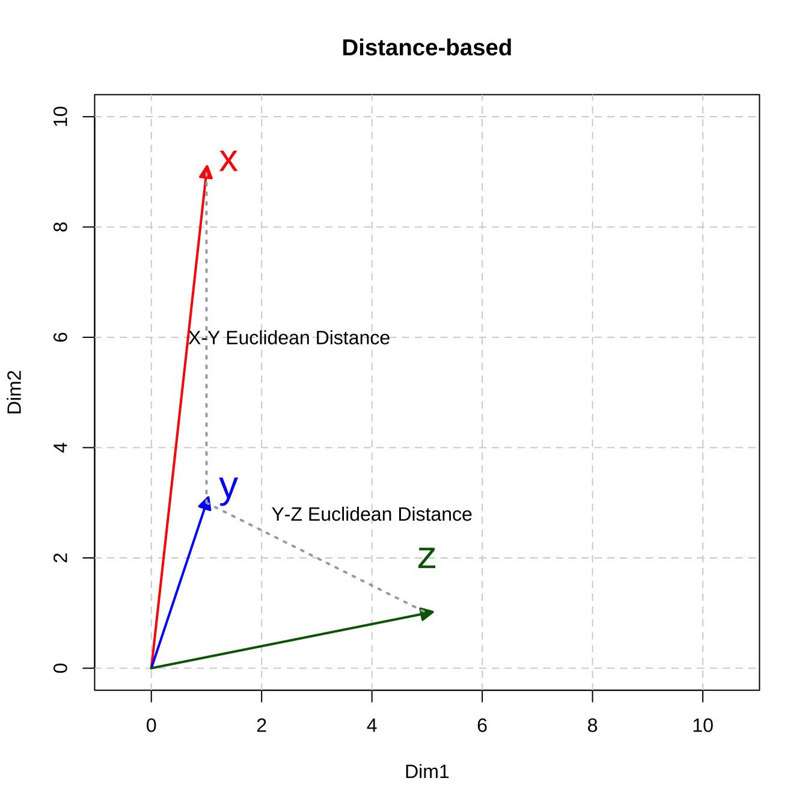
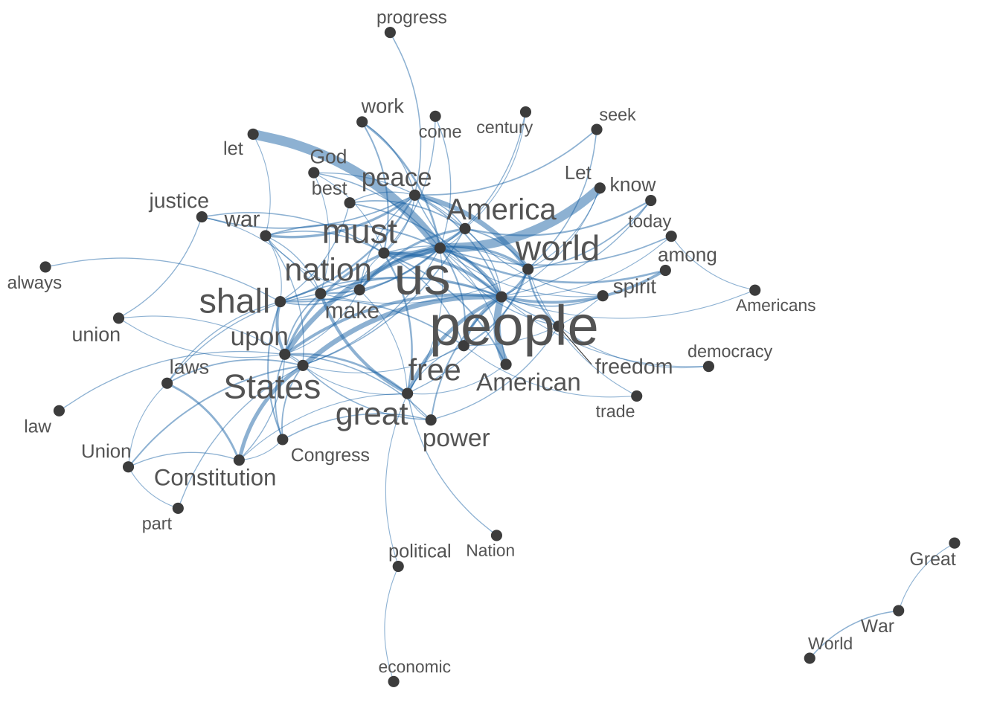
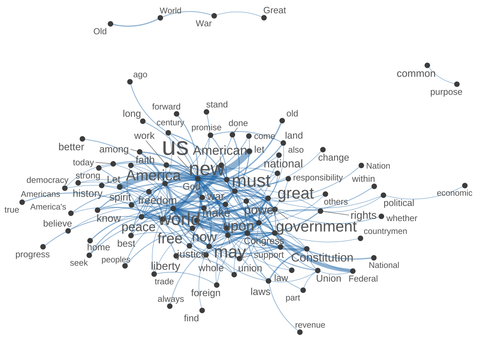
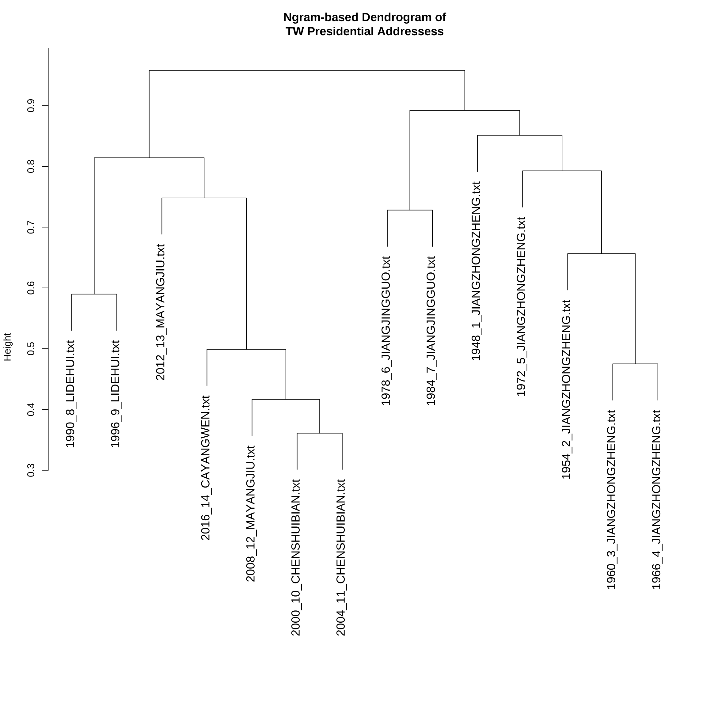
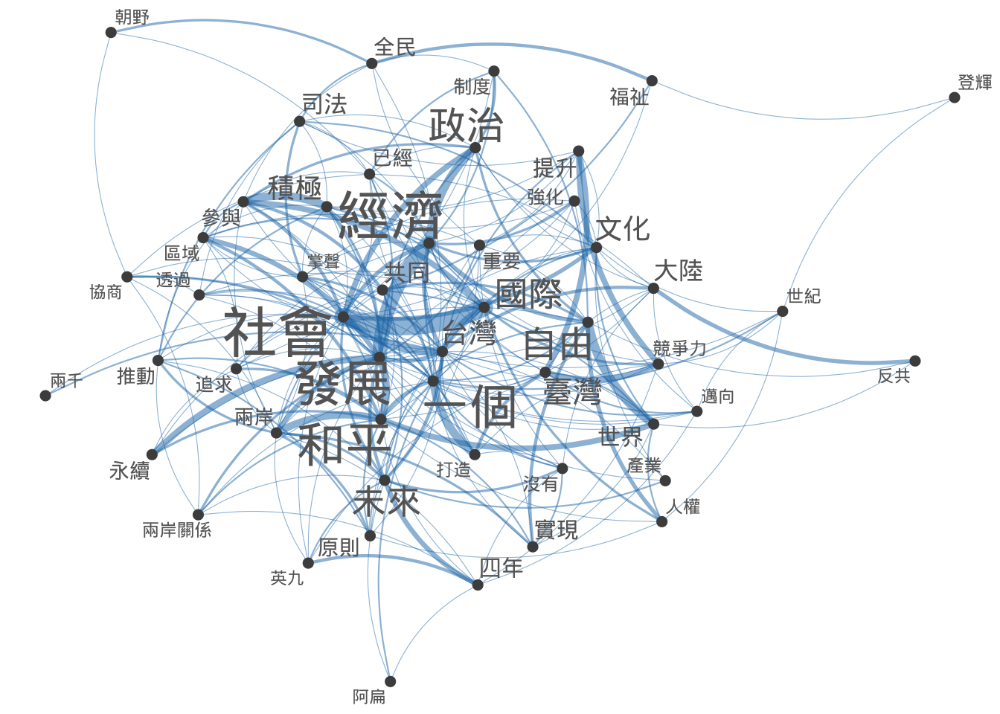
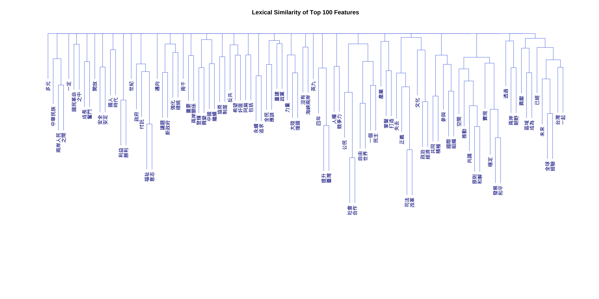

Chapter 12 Vector Space Representation
library(tidyverse)
library(quanteda)
library(quanteda.textstats)
library(quanteda.textplots)
library(showtext)
showtext_auto(enable = T)In this chapter, I would like to talk about the idea of distributional semantics, which features the hypothesis that the meaning of a linguistic unit is closely connected to its co-occurring contexts (co-texts).
I will show you how this idea can be operationalized computationally and quantified using the distributional data of the linguistic units in the corpus.
Because English and Chinese text processing requires slightly different procedures, this chapter will first focus on English texts.
12.1 Distributional Semantics
Distributional approach to semantics was first formulated by John Firth in his famous quotation:
You shall know a word by the company it keeps (Firth, 1957, p. 11).
In other words, words that occur in the same contexts tend to have similar meanings (Z. Harris, 1954).
[D]ifference of meaning correlates with difference of distribution. (Z. S. Harris, 1970, p. 785)
The meaning of a [construction] in the network is represented by how it is linked to other words and how these are interlinked themselves. (De Deyne et al., 2016)
In computational linguistics, this idea has been implemented in the modeling of lexical semantics and documents topics. The lexical meanings of words or topics of documents can be computationally represented by the distributional information of their co-occurring words.
Document Semantics/Topics
- This distributional model can be applied to the semantic representation of documents in corpus as well. One can extract the distributional information of target documents automatically from large corpora, i.e., their co-occurring contextual features.
- The co-occurrence frequencies between target documents and contextual features can also be combined in long vectors, which can be utilized to computationally measure the inter-document similarity/difference.
Lexical Semantics
- We can extract the distributional information of target words automatically from large corpora, i.e., their co-occurring contextual features.
- These co-occurrence frequencies (raw or weighted) between target words and contextual features can be combined in long vectors, which can be utilized to computationally measure the semantic distance/similarity in-between the target words.
Therefore, this distributional approach to meanings is sometimes referred to as Vector Space Semantics.
In short, we can represent the semantics of a linguistic unit based on its co-occurrence patterns with specific contextual features.
If two words co-occur with similar sets of contextual features, they are likely to be semantically similar.
With the vectorized representations of words, we can compute their semanitc distances.

12.2 Vector Space Model for Documents
Now I would like to demonstrate how we can adopt this vector space model to study the semantics of documents.
12.2.1 Data Processing Flowchart
In Chapter 5, I have provided a data processing flowchart for the English texts. Here I would like to add to the flowchart several follow-up steps with respect to the vector-based representation of the corpus documents.
Most importantly, a new object class is introduced in Figure 12.1, i.e., the dfm object in quanteda. It stands for Document-Feature-Matrix. It’s a two-dimensional co-occurrence table, with the rows being the documents in the corpus, and columns being the features used to characterize the documents. The cells in the matrix are the co-occurrence statistics between each document and the feature.
Different ways of operationalizing the features and the cell values may lead to different types of dfm. In this section, I would like to show you how to create dfm of a corpus and what are the common ways to define features and cell values for the analysis of document semantics via vector space representation.
Figure 12.1: English Text Analytics Flowchart (v2)
12.2.2 Document-Feature Matrix (dfm)
To create a dfm, i.e., Dcument-Feature-Matrix, of your corpus data, there are generally three steps:
- Create an
corpusobject of your data; - Tokenize the
corpusobject into atokensobject; - Create the
dfmobject based on thetokensobject
In this tutorial, I will use the same English dataset as we discussed in Chapter 5, the data_corpus_inaugural, preloaded in the package quanteda.
For English data, the process is simple: we first load the corpus and create a dfm object of the corpus using dfm().
## `corpus`
corp_us <- data_corpus_inaugural
## `tokens`
corp_us_tokens <- tokens(corp_us)
## `dfm`
corp_us_dfm <- dfm(corp_us_tokens)
## check dfm
corp_us_dfmDocument-feature matrix of: 59 documents, 9,439 features (91.84% sparse) and 4 docvars.
features
docs fellow-citizens of the senate and house representatives :
1789-Washington 1 71 116 1 48 2 2 1
1793-Washington 0 11 13 0 2 0 0 1
1797-Adams 3 140 163 1 130 0 2 0
1801-Jefferson 2 104 130 0 81 0 0 1
1805-Jefferson 0 101 143 0 93 0 0 0
1809-Madison 1 69 104 0 43 0 0 0
features
docs among vicissitudes
1789-Washington 1 1
1793-Washington 0 0
1797-Adams 4 0
1801-Jefferson 1 0
1805-Jefferson 7 0
1809-Madison 0 0
[ reached max_ndoc ... 53 more documents, reached max_nfeat ... 9,429 more features ]## Check object class
class(data_corpus_inaugural)[1] "corpus" "character"class(corp_us)[1] "corpus" "character"class(corp_us_dfm)[1] "dfm"
attr(,"package")
[1] "quanteda"12.2.3 Intuition for DFM
What is dfm anyway?
A document-feature-matrix is a simple co-occurrence table.
In a dfm, each row refers to a document in the corpus, and the column refers to a linguistic unit that occurs in the document(s) (i.e., the contextual features in the vector space model).
- If the contextual feature is a word, then this
dfmwould be a document-word-matrix, with the columns referring to all the words observed in the corpus, i.e., the vocabulary of the corpus. - If the contextual feature is an n-gram, then this
dfmwould be a document-ngram-matrix, with the columns referring to all the n-grams observed in the corpus.
What about the values in the cells of dfm?
- The most intuitive values in the cells are the co-occurrence frequencies, i.e., the number of occurrences of the contextual feature (i.e., column) in a particular document (i.e., row).
For example, in the corpus data_corpus_inaugural, based on the corp_us_dfm created earlier, we can see that in the first document, i.e., 1789-Washington, there are 2 occurrences of “representatives”, 48 occurrences of “and”.
Bag of Words Representation
By default, the dfm() would create a document-by-word matrix, i.e., generating words as the contextual features.
A dfm with words as the contextual features is the simplest way to characterize the documents in the corpus, namely, to analyze the semantics of the documents by looking at the words occurring in the documents.
This document-by-word matrix treats each document as bags of words. That is, how the words are arranged relative to each other is ignored (i.e., the morpho-syntactic relationships between words in texts are greatly ignored). Therefore, this document-by-word dfm should be the most naive characterization of the texts.
In many computational tasks, however, it turns out that this simple bag-of-words model is very effective in modeling the semantics of the documents.
12.2.4 More sophisticated DFM
The dfm() with the default settings creates a document-by-word matrix. We can create more sophisticated DFM by refining the contextual features.
A document-by-ngram matrix can be more informative because the contextual features take into account (partial & limited) sequential information between words. In quanteda, to obtain an ngram-based dfm:
- Create an ngram-based
tokensusingtokens_ngrams()first; - Create an ngram-based
dfmbased on the ngram-basedtokens;
## create ngrams tokens
corp_us_ngrams <- tokens_ngrams(corp_us_tokens,
n = 2:3)
## create ngram-based dfm
corp_us_ngrams_dfm <- dfm(corp_us_ngrams)12.2.5 Distance/Similarity Metrics
The advantage of creating a document-feature-matrix is that now each document is not only a series of character strings, but also a list of numeric values (i.e., a row of co-occurring frequencies), which can be compared mathematically with the other documents (i.e., the other rows).
For example, now the document 1789-Washington can be represented as a series of numeric values:
## contextual feautres of `1789-Washington`
corp_us_dfm[1,]Document-feature matrix of: 1 document, 9,439 features (93.61% sparse) and 4 docvars.
features
docs fellow-citizens of the senate and house representatives :
1789-Washington 1 71 116 1 48 2 2 1
features
docs among vicissitudes
1789-Washington 1 1
[ reached max_nfeat ... 9,429 more features ]The idea is that if two documents co-occur with similar sets of contextual features, they are more likely to be similar in their semantics as well.
And now with the numeric representation of the documents, we can quantify these similarities.
Take a two-dimensional space for instance.
Let’s assume that we have three simple documents: \(x\), \(y\), \(z\), and each document is vectorized as a vector of two numeric values.
x <- c(1,9)
y <- c(1,3)
z <- c(5,1)If we visualize these document vectors in a two-dimensional space, we can compute their distance/similarity mathematically.
In Math, there are in general two types of metrics to measure the relationship between vectors: distance-based vs. similarity-based metrics.
Figure 12.2: Vector Representation
Distance-based Metrics
Many distance measures of vectors are based on the following formula and differ in the parameter \(k\).
\[\big( \sum_{i = 1}^{n}{|x_i - y_i|^k}\big)^{\frac{1}{k}}\]
The n in the above formula refers to the number of dimensions of the vectors. (In other words, all the concepts we discuss here can be easily extended to vectors in multidimensional spaces.)
When k is set to 2, it computes the famous Euclidean distance of two vectors, i.e., the direct spatial distance between two points on the n-dimensional space (Remember Pythagorean Theorem? )
\[\sqrt{\big( \sum_{i = 1}^{n}{|x_i - y_i|^2}\big)}\]
- When \(k = 1\), the distance is referred to as Manhattan Distance or City Block Distance:
\[\sum_{i = 1}^{n}{|x_i - y_i|}\]
When \(k\geq3\), the distance is a generalized form, called, Minkowski Distance at the order of \(k\).
In other words, \(k\) represents the order of norm. The Minkowski Distance of the order 1 is the Manhattan Distance; the Minkowski Distance of the order 2 is the Euclidean Distance.
## Create vectors
x <- c(1,9)
y <- c(1,3)
z <- c(5,1)
## computing pairwise euclidean distance
sum(abs(x-y)^2)^(1/2) # XY distance
[1] 6
sum(abs(y-z)^2)^(1/2) # YZ distnace
[1] 4.472136
sum(abs(x-z)^2)^(1/2) # XZ distnace
[1] 8.944272The geometrical meanings of the Euclidean distance are easy to conceptualize (c.f., the dashed lines in Figure 12.3)

Figure 12.3: Distance-based Metric: Euclidean Distance
Similarity-based Metrics
In addition to distance-based metrics, we can measure the similarity of vectors using a similarity-based metric, which often utilizes the idea of correlations. The most commonly used one is Cosine Similarity, which can be computed as follows:
\[cos(\vec{x},\vec{y}) = \frac{\sum_{i=1}^{n}{x_i\times y_i}}{\sqrt{\sum_{i=1}^{n}x_i^2}\times \sqrt{\sum_{i=1}^{n}y_i^2}}\]
# comuting pairwise cosine similarity
sum(x*y)/(sqrt(sum(x^2))*sqrt(sum(y^2))) # xy
[1] 0.9778024
sum(y*z)/(sqrt(sum(y^2))*sqrt(sum(z^2))) # yz
[1] 0.4961389
sum(x*z)/(sqrt(sum(x^2))*sqrt(sum(z^2))) # xz
[1] 0.3032037The Cosine Similarity ranges from -1 (= the least similar) to 1 (= the most similar).
The geometric meanings of cosines of two vectors are connected to the arcs between the vectors: the greater their cosine similarity, the smaller the arcs, the closer they are.

Cosine Similarity is related to Pearson Correlation. If you would like to know more about their differences, take a look at this comprehensive blog post, Cosine Similarity VS Pearson Correlation Coefficient.
Therefore, it is clear to see that cosine similarity highlights the documents similarities in terms of whether their values on all the dimensions (contextual features) vary in the same directions.
However, distance-based metrics would highlight the document similarities in terms of how much their values on all the dimensions differ.
Computing pairwise distance/similarity using quanteda
In quanteda.textstats library, there are two main functions that can help us compute pairwise similarities/distances between vectors using two useful functions:
textstat_simil(): similarity-based metricstextstat_dist(): distance-based metrics
The expected input argument of these two functions is a dfm and they compute all pairwise distance/similarity metrics in-between the rows of the DFM (i.e., the documents).
## Create a simple DFM
xyz_dfm <- as.dfm(matrix(c(1,9,1,3,5,1),
byrow=T,
ncol=2))
## Rename documents
docnames(xyz_dfm) <- c("X","Y","Z")
## Check
xyz_dfmDocument-feature matrix of: 3 documents, 2 features (0.00% sparse) and 0 docvars.
features
docs feat1 feat2
X 1 9
Y 1 3
Z 5 1## Computing cosine similarity
textstat_simil(xyz_dfm, method="cosine")textstat_simil object; method = "cosine"
X Y Z
X 1.000 0.978 0.303
Y 0.978 1.000 0.496
Z 0.303 0.496 1.000## Computing euclidean distance
textstat_dist(xyz_dfm, method = "euclidean")textstat_dist object; method = "euclidean"
X Y Z
X 0 6.00 8.94
Y 6.00 0 4.47
Z 8.94 4.47 0There are other useful functions in R that can compute the pairwise distance/similarity metrics on a matrix. When using these functions, please pay attention to whether they provide distance or similarity metrics because these two are very different in meanings.
For example, amap::Dist() provides cosine-based distance, not similarity.
## Compute cosine distance with amap::Dist()
amap::Dist(xyz_dfm, method = "pearson") X Y
Y 0.02219759
Z 0.69679634 0.50386106## Compute cosine similarity with amap::Dist()
(1- amap::Dist(xyz_dfm, method="pearson")) X Y
Y 0.9778024
Z 0.3032037 0.4961389Interim Summary
- The Euclidean Distance metric is a distance-based metric: the larger the value, the more distant the two vectors.
- The Cosine Similarity metric is a similarity-based metric: the larger the value, the more similar the two vectors.
Based on our computations of the metrics for the three vectors, now in terms of the Euclidean Distance, y and z are closer; in terms of Cosine Similarity, x and y are closer.

Therefore, it should now be clear that the analyst needs to decide which metric to use, or more importantly, which metric is more relevant. The key is which of the following is more important in the semantic representation of the documents/words:
- The absolute value differences that the vectors have on each dimension (i.e., the lengths of the vectors)
- The relative increase/decrease of the values on each dimension (i.e., the curvatures of vectors)
There are many other distance-based or similarity-based metrics available. For more detail, please see Manning & Schütze (1999) Ch15.2.2. and Jurafsky & Martin (2020) Ch6: Vector Semantics and Embeddings.
12.2.6 Multidimensiona Space
Back to our example of corp_us_dfm, it is essentially the same vector representation, but in a multidimensional space (cf. Figure 12.4). The document in each row is represented as a vector of N dimensional space. The size of N depends on the number of contextual features that are included in the analysis of the dfm.

Figure 12.4: Example of Document-Feature Matrix
12.2.7 Feature Selection
A dfm may not be as informative as we have expected. To better capture the document’s semantics/topics, there are several important factors that need to be more carefully considered with respect to the contextual features of the dfm:
- The granularity of the features
- The informativeness of the features
- The distributional properties of the features
Granularity
In our previous example, we include only words, i.e., unigrams, as our contextual features in the corp_us_dfm. We can in fact include linguistic units at multiple granularities:
- raw word forms (
dfm()default contextual features) - (skipped) n-grams
- lemmas/stems
- Specific syntactic categories (e.g., lexical words)
For example, if you want to include bigrams, not unigrams, as features in the dfm, you can do the following:
- from
corpustotokens - from
tokenstongram-based tokens - from
ngram-based tokenstodfm
## Create DFM based on bigrams
corp_us_dfm_bigram <- dfm(tokens_ngrams(corp_us_tokens, n =2))Or for English data, if you want to ignore the stem variations between words (i.e., house and houses may not be differ so much), you can do it this way:
## Create DFM based on word stems
corp_us_dfm_unigram_stem <- dfm_wordstem(corp_us_dfm)We can of course create DFM based on stemmed bigrams:
## Create DFM based on stemmed bigrams
corp_us_dfm_bigram_stem <- corp_us_tokens %>% ## tokens
tokens_ngrams(n = 2) %>% ## bigram tokens
dfm() %>% ## dfm
dfm_wordstem() ## stemYou need to decide which types of contextual features are more relevant to your research question. In many text mining applications, people often make use of both unigrams and n-grams. However, these are only heuristics, not rules.
corp_us, can you create a dfm, where the features are trigrams but all the words in the trigrams are word stems not the original surface word forms? (see below)
Informativeness
There are words that are not so informative in telling us the similarity and difference between the documents because they almost appear in every document of the corpus, but carry little (referential) semantic contents.
Typical tokens include:
- Stopwords
- Numbers
- Symbols
- Control characters
- Punctuation marks
- URLs
The library quanteda has defined a default English stopword list, i.e., stopwords("en").
## English stopword
stopwords("en") %>% head(50) [1] "i" "me" "my" "myself" "we"
[6] "our" "ours" "ourselves" "you" "your"
[11] "yours" "yourself" "yourselves" "he" "him"
[16] "his" "himself" "she" "her" "hers"
[21] "herself" "it" "its" "itself" "they"
[26] "them" "their" "theirs" "themselves" "what"
[31] "which" "who" "whom" "this" "that"
[36] "these" "those" "am" "is" "are"
[41] "was" "were" "be" "been" "being"
[46] "have" "has" "had" "having" "do" length(stopwords("en"))[1] 175To remove stopwords from the
dfm, we can usedfm_remove()on thedfmobject.To remove numbers, symbols, or punctuation marks, we can further specify a few parameters for the function
tokens():remove_punct = TRUE: remove all characters in the Unicode “Punctuation” [P] classremove_symbols = TRUE: remove all characters in the Unicode “Symbol” [S] classremove_url = TRUE: find and eliminate URLs beginning with http(s)remove_separators = TRUE: remove separators and separator characters (Unicode “Separator” [Z] and “Control” [C] categories)
## Create new DFM
## w/o non-word tokens and stopwords
corp_us_dfm_unigram_stop_punct <- corp_us %>%
tokens(remove_punct = TRUE, ## remove non-word tokens
remove_symbols = TRUE,
remove_numbers = TRUE,
remove_url = TRUE) %>%
dfm() %>% ## Create DFM
dfm_remove(stopwords("en")) ## Remove stopwords from DFMWe can see that the number of features varies a lot when we operationalize the contextual features differently:
## Changes of Contextual Feature Numbers
nfeat(corp_us_dfm) ## default unigram version
[1] 9439
nfeat(corp_us_dfm_unigram_stem) ## unigram + stem
[1] 5596
nfeat(corp_us_dfm_bigram) ## bigram
[1] 64442
nfeat(corp_us_dfm_bigram_stem) ## bigram + stem
[1] 58045
nfeat(corp_us_dfm_unigram_stop_punct) ## unigram removing non-words/puncs
[1] 9212Distributional Properties
Finally, we can also select contextual features based on their distributional properties. For example:
- (Term) Frequency: the contextual feature’s frequency counts in the corpus
- Set a cut-off minimum to avoid hapax legomenon or highly idiosyncratic words
- Set a cut-off maximum to remove high-frequency function words, carrying little semantic content.
- Dispersion (Document Frequency)
- Set a cut-off minimum to avoid idiosyncratic or domain-specific words;
- Set a cut-off maximum to avoid stopwords;
- Other Self-defined Weights
- We can utilize association-based metrics to more precisely represent the association between a contextual feature and a document (e.g., PMI, LLR, TF-IDF).
In quanteda, we can easily specify our distributional cutoffs for contextual features:
- Frequency:
dfm_trim(DFM, min_termfreq = ..., max_termfreq = ...) - Dispersion:
dfm_trim(DFM, min_docfreq = ..., max_docfreq = ...) - Weights:
dfm_weight(DFM, scheme = ...)ordfm_tfidf(DFM)
dfm_trim(), dfm_weight(), dfm_tfidf() very carefully and make sure you know how to use them.
In the following demo, we adopt a few strategies to refine the contextual features of the dfm:
- we create a simple unigram
dfmbased on the word-forms - we remove stopwords, punctuation marks, numbers, and symbols
- we include contextual words whose termfreq \(\geq\) 10 and docfreq \(\geq\) 3
## Create trimmed DFM
corp_us_dfm_trimmed <- corp_us %>% ## corpus
tokens( ## tokens
remove_punct = T,
remove_numbers = T,
remove_symbols = T
) %>%
dfm() %>% ## dfm
dfm_remove(stopwords("en")) %>% ## remove stopwords
dfm_trim(
min_termfreq = 10, ## frequency
max_termfreq = NULL,
termfreq_type = "count",
min_docfreq = 3, ## dispersion
max_docfreq = NULL,
docfreq_type = "count"
)
nfeat(corp_us_dfm_trimmed)[1] 1401In dfm_trim(), we can specify the cutoff values of min_termfreq/max_termfreq and min_docfreq/max_docfreq in different ways.
The numbers could refer to:
"count": Raw termfreq/docfreq counts;"prop": Normalized termfreq/docfreq (percentages);"rank": Inverted ranking of the features in terms of overall termfreq/docfreq;"quantile": Quantiles of termfreq/docfreq.
12.2.8 Exploratory Analysis of dfm
- We can check the top features in the current corpus:
## Check top important contextual features
topfeatures(corp_us_dfm_trimmed, n = 20) people government us can must upon great
584 564 505 487 376 371 344
may states world shall country nation every
343 334 319 316 308 305 300
one peace new power now public
267 258 250 241 229 225 - We can visualize the top features using a word cloud:
## Create wordcloud
## Set random seed
## (to make sure consistent results for every run)
set.seed(100)
## Color brewer
require(RColorBrewer)
## Plot wordcloud
textplot_wordcloud(
corp_us_dfm_trimmed,
max_words = 200,
random_order = FALSE,
rotation = .25,
color = brewer.pal(7, "Dark2")
)
12.2.9 Document Similarity
As shown in 12.4, with the N-dimensional vector representation of each document, we can compute the mathematical distances/similarities between two documents.
In Section 12.2.5, we introduced two important metrics:
- Distance-based metric: Euclidean Distance
- Similarity-based metric: Cosine Similarity
quanteda provides useful functions to compute these metrics (as well as other alternatives): textstat_simil() and textstat_dist()
Before computing the document similarity/distance, we usually convert the frequency counts in dfm into more sophisticated metrics using normalization or weighting schemes.
There are two common schemes:
- Normalized Term Frequencies
- TF-IDF Weighting Scheme
Normalized Term Frequencies

- We can normalize these term frequencies into percentages to reduce the impact of the document size (i.e., marginal frequencies) on the significance of the co-occurrence frequencies.
## Intuition for Normalized Frequencies
## Raw Frequency Counts
corp_us_dfm_trimmed[1,1:5] Document-feature matrix of: 1 document, 5 features (0.00% sparse) and 4 docvars.
features
docs fellow-citizens senate house representatives among
1789-Washington 1 1 2 2 1## Normalized Frequencies
dfm_weight(corp_us_dfm_trimmed,
scheme="prop")[1,1:5]Document-feature matrix of: 1 document, 5 features (0.00% sparse) and 4 docvars.
features
docs fellow-citizens senate house representatives
1789-Washington 0.002427184 0.002427184 0.004854369 0.004854369
features
docs among
1789-Washington 0.002427184## Intuition
corp_us_dfm_trimmed[1,1:5]/sum(corp_us_dfm_trimmed[1,])Document-feature matrix of: 1 document, 5 features (0.00% sparse) and 4 docvars.
features
docs fellow-citizens senate house representatives
1789-Washington 0.002427184 0.002427184 0.004854369 0.004854369
features
docs among
1789-Washington 0.002427184TF-IDF Weighting SCheme

- A more sophisticated weighting scheme is TF-IDF scheme. We can weight the significance of term frequencies based on the term’s IDF.
Inverse Document Frequencies
- For each contextual feature, we can also assess their distinctive power in terms of their dispersion across the entire corpus.
- In addition to document frequency counts, there is a more effective metric, Inverse Document Frequency(IDF) (often used in Information Retrieval), to capture the distinctiveness of the features.
- The IDF of a term (\(w_i\)) in a corpus (\(D\)) is defined as the log-transformed ratio of the corpus size (\(|D|\)) to the term’s document frequency (\(df_i\)).
- The more widely dispersed the contextual feature is, the lower its IDF; the less dispersed the contextual feature, the higher its IDF.
\[ IDF(w_i, D) = log_{10}{\frac{|D|}{df_i}} \]
## Intuition for Inverse Document Frequency
## Docfreq of the first ten features
docfreq(corp_us_dfm_trimmed)[1:10]fellow-citizens senate house representatives among
19 9 8 14 43
life event greater order received
49 9 29 29 10 ## Inverse Doc
docfreq(corp_us_dfm_trimmed,
scheme = "inverse",
base = 10)[1:10]fellow-citizens senate house representatives among
0.49209841 0.81660950 0.86776202 0.62472398 0.13738356
life event greater order received
0.08065593 0.81660950 0.30845401 0.30845401 0.77085201 ## Intuition
corpus_size <- ndoc(corp_us_dfm_trimmed)
log(corpus_size/docfreq(corp_us_dfm_trimmed), 10)[1:10]fellow-citizens senate house representatives among
0.49209841 0.81660950 0.86776202 0.62472398 0.13738356
life event greater order received
0.08065593 0.81660950 0.30845401 0.30845401 0.77085201 - The TFIDF of a term (\(w_i\)) in a document (\(d_j\)) is the product of the word’s term frequency (TF) in the document (\(tf_{ij}\)) and the IDF of the term (\(log\frac{|N|}{df_i}\)).
\[ TFIDF(w_i, d_j) = tf_{ij} \times log\frac{|N|}{df_i} \]
## Intuition for TFIDF
## Raw Frequency Counts
corp_us_dfm_trimmed[1,1:5] Document-feature matrix of: 1 document, 5 features (0.00% sparse) and 4 docvars.
features
docs fellow-citizens senate house representatives among
1789-Washington 1 1 2 2 1## TF-IDF
dfm_tfidf(corp_us_dfm_trimmed)[1,1:5]Document-feature matrix of: 1 document, 5 features (0.00% sparse) and 4 docvars.
features
docs fellow-citizens senate house representatives among
1789-Washington 0.4920984 0.8166095 1.735524 1.249448 0.1373836## Intuition
TF_ex <- corp_us_dfm_trimmed[1,]
IDF_ex <- docfreq(corp_us_dfm_trimmed, scheme= "inverse")
TFIDF_ex <- TF_ex*IDF_ex
TFIDF_ex[1,1:5]Document-feature matrix of: 1 document, 5 features (0.00% sparse) and 4 docvars.
features
docs fellow-citizens senate house representatives among
1789-Washington 0.4920984 0.8166095 1.735524 1.249448 0.1373836We weight the dfm with the TF-IDF scheme before the document similarity analysis.
## weight DFM
corp_us_dfm_trimmed_tfidf <- dfm_tfidf(corp_us_dfm_trimmed)
## top features of count-based DFM
topfeatures(corp_us_dfm_trimmed, 20) people government us can must upon great
584 564 505 487 376 371 344
may states world shall country nation every
343 334 319 316 308 305 300
one peace new power now public
267 258 250 241 229 225 ## top features of tfidf-based DFM
topfeatures(corp_us_dfm_trimmed_tfidf, 20) america union congress constitution freedom upon
56.45704 50.48339 40.09902 39.93330 39.69166 36.63779
americans democracy revenue laws federal public
35.55963 35.05941 34.57065 34.54126 33.35736 33.21061
states executive business today government let
32.98389 32.93036 32.48151 32.38767 30.93465 28.76598
policy necessary
28.49188 27.83804 - Distance-based Results (Euclidean Distance)
## Distance-based: Euclidean
corp_us_euclidean <- textstat_dist(corp_us_dfm_trimmed_tfidf,
method = "euclidean")- Cosine-based Results (Cosine Similarity)
## Similarity-based: Cosine
corp_us_cosine <- textstat_simil(corp_us_dfm_trimmed_tfidf,
method = "cosine")As we have discussed in the previous sections, different distance/similarity metrics may give very different results. As an analyst, we can go back to the original documents and evaluate these quantitative results in a qualitative way.
For example, let’s manually check the document that is the most similar to 1789-Washington according to Euclidean Distance and Cosine Similarity:
## Closest document based on euclidean
which.min(corp_us_euclidean[-1,1])1793-Washington
1 ## Closest document based on cosine
which.max(corp_us_cosine[-1,1])1841-Harrison
13 ## You can further inspect the texts
as.character(corp_us["1789-Washington"]) %>% strtrim(400) 1789-Washington
"Fellow-Citizens of the Senate and of the House of Representatives:\n\nAmong the vicissitudes incident to life no event could have filled me with greater anxieties than that of which the notification was transmitted by your order, and received on the 14th day of the present month. On the one hand, I was summoned by my Country, whose voice I can never hear but with veneration and love, from a retreat wh" as.character(corp_us["1793-Washington"]) %>% strtrim(400) 1793-Washington
"Fellow citizens, I am again called upon by the voice of my country to execute the functions of its Chief Magistrate. When the occasion proper for it shall arrive, I shall endeavor to express the high sense I entertain of this distinguished honor, and of the confidence which has been reposed in me by the people of united America.\n\nPrevious to the execution of any official act of the President the Con" as.character(corp_us["1841-Harrison"]) %>% strtrim(400) 1841-Harrison
"Called from a retirement which I had supposed was to continue for the residue of my life to fill the chief executive office of this great and free nation, I appear before you, fellow-citizens, to take the oaths which the Constitution prescribes as a necessary qualification for the performance of its duties; and in obedience to a custom coeval with our Government and what I believe to be your expec" 12.2.10 Cluster Analysis
The pairise distance/similarity matrices are sometimes less comprehensive. We can visulize the document distances in a more comprehensive way by an exploratory technique called hierarchical cluster analysis.
## distance-based
corp_us_hist_euclidean <- corp_us_euclidean %>%
as.dist %>% ## DFM to dist
hclust ## cluster analysis
## Plot dendrogram
# plot(corp_us_hist_euclidean, hang = -1, cex = 0.6)
require("ggdendro")
ggdendrogram(corp_us_hist_euclidean,
rotate = TRUE,
theme_dendro = TRUE)
## similarity
corp_us_hist_cosine <- (1 - corp_us_cosine) %>% ## similarity to distance
as.dist %>%
hclust
## Plot dendrogram
# plot(corp_us_hist_cosine, hang = -1, cex = 0.6)
ggdendrogram(corp_us_hist_cosine,
rotate = TRUE,
theme_dendro = TRUE)
Please note that textstat_simil() gives us the
similarity matrix. In other words, the numbers in the
matrix indicate how similar the documents are. However, for
hierarchical cluster analysis, the function hclust()
expects a distance-based matrix, namely one indicating how dissimilar
the documents are. Therefore, we need to use
(1 - corp_us_cosine) in the cosine example before
performing the cluster analysis.
Cluster anlaysis is a very useful exploratory technique to examine the emerging structure of a large dataset. For more detail introduction to this statistical method, I would recommend Gries (2013) Ch 5.6 and the very nice introductory book, Kaufman & Rousseeuw (1990).
For more information on vector-space semantics, I would highly recommend the chapter of Vector Semantics and Embeddings, by Dan Jurafsky and James Martin.
12.3 Vector Space Model for Words (Self-Study)
So far, we have been talking about applying the vector space model to study the document semantics.
Now let’s take a look at how this distributional semantic approach can facilitate a lexical semantic analysis.
With a corpus, we can also study the distribution, or contextual features, of (target) words based on their co-occurring (contextual) words. Now I would like to introduce another object defined in quanteda, i.e., the Feature-Cooccurrence Matrix fcm.
12.3.1 Feature-Coocurrence Matrix (fcm)
A Feature-Cooccurrence Matrix is essentially a word co-occurrence matrix (i.e., a square matrix). There are two ways to create a fcm:
- from
tokenstofcm - from
dfmtofcm
12.3.2 From tokens to fcm
We can create a word co-occurrence matrix fcm from the tokens object.
We can further operationalize our contextual features for target words in two ways:
- Window-based: Only words co-occurring within a defined window size of the target word will be included as its contextual features
- Document-based: All words co-occurring in the same document as the target word will be included as its contextual features.
Window-based Contextual Features
## tokens object
corp_us_tokens <- tokens(
corp_us,
what = "word",
remove_punct = TRUE,
remove_symbol = TRUE,
remove_numbers = TRUE
)
## window-based FCM
corp_fcm_win <- fcm(
corp_us_tokens, ## tokens
context = "window", ## context type
window = 1) # window size
## Check
corp_fcm_winFeature co-occurrence matrix of: 10,075 by 10,075 features.
features
features Fellow-Citizens of the Senate and House Representatives
Fellow-Citizens 0 2 0 0 0 0 0
of 0 0 1766 0 87 6 4
the 0 0 0 8 463 5 0
Senate 0 0 0 0 3 0 0
and 0 0 0 0 2 2 0
House 0 0 0 0 0 0 0
Representatives 0 0 0 0 0 0 0
Among 0 0 0 0 0 0 0
vicissitudes 0 0 0 0 0 0 0
incident 0 0 0 0 0 0 0
features
features Among vicissitudes incident
Fellow-Citizens 0 0 0
of 0 1 1
the 1 2 2
Senate 0 0 0
and 0 2 0
House 0 0 0
Representatives 1 0 0
Among 0 0 0
vicissitudes 0 0 1
incident 0 0 0
[ reached max_feat ... 10,065 more features, reached max_nfeat ... 10,065 more features ]## check top 50 features
topfeatures(corp_fcm_win, n = 50) our the in we is to
1978 1766 1359 1217 1062 884
be a all for We people
875 777 749 740 715 679
will their are and it that
661 652 608 555 554 546
been this us States by not
530 527 498 467 444 434
upon as do its world those
433 428 427 426 426 412
must should peace Government It them
397 392 390 386 377 367
great power Constitution any only freedom
361 355 339 325 321 314
may government with they shall nation
302 301 299 297 289 288
I so
283 274 A look at the corp_fcm_win:
## Check top 10 contextual features
## for specific target worods
corp_fcm_win["our",] %>% topfeatures(10) national institutions upon common Constitution Union
38 26 22 21 20 19
children Nation fathers within
19 19 18 15 corp_fcm_win["must",] %>% topfeatures(10) We America do go continue There citizen keep
46 9 7 5 5 4 4 4
carry realize
4 4 Document-based Contextual Features
## Document-based FCM
corp_fcm_doc <- fcm(
corp_us_tokens,
context = "document")
## check
corp_fcm_docFeature co-occurrence matrix of: 10,075 by 10,075 features.
features
features Fellow-Citizens of the Senate and House
Fellow-Citizens 0 710 1057 2 507 2
of 0 681011 1810708 2042 862543 1408
the 0 0 1210315 2749 1148145 1968
Senate 0 0 0 3 1418 12
and 0 0 0 0 297873 909
House 0 0 0 0 0 3
Representatives 0 0 0 0 0 0
Among 0 0 0 0 0 0
vicissitudes 0 0 0 0 0 0
incident 0 0 0 0 0 0
features
features Representatives Among vicissitudes incident
Fellow-Citizens 2 1 1 2
of 996 514 701 1509
the 1350 688 897 2052
Senate 4 1 1 2
and 503 348 463 1108
House 6 2 2 2
Representatives 1 2 2 2
Among 0 0 2 1
vicissitudes 0 0 0 1
incident 0 0 0 2
[ reached max_feat ... 10,065 more features, reached max_nfeat ... 10,065 more features ]## Check top 50 contextual features
topfeatures(corp_fcm_doc, n = 50) our the to in and a
3176109 3022080 2619459 2586044 2310486 1982691
be is we for their that
1923444 1828034 1671039 1449786 1286232 1254497
are it will The not as
1212962 1185232 1140058 1136470 1081138 993573
We by all which has its
979336 923827 908249 861352 857148 835208
people upon or this us been
831527 822480 816930 809940 728218 716072
of I should It must any
681721 678465 672000 668992 641750 641596
have with them so States great
638159 626747 615322 600749 575961 574693
Government power may they only at
570366 556246 544947 525462 522589 518657
from Constitution
515615 491481 ## Check top 10 contextual features
## for specific target words
corp_fcm_doc["our",] %>% topfeatures(10) we our We us must upon should world any power
54260 47064 24405 21543 17170 15701 13697 12791 11170 10692 corp_fcm_doc["must",] %>% topfeatures(10) We us upon do any must only America peace when
5147 3914 3258 2126 2015 1996 1995 1956 1846 1506 In the above examples of fcm, we tokenize our corpus into tokens first and then use it to create the fcm. The advantage of our current method is that we can have a full control of the word tokenization, i.e., what tokens we would like to include in the fcm.
This can be particularly important when we deal with Chinese data.
12.3.3 From dfm to fcm
A fcm can also be created from dfm. The limitation is that we can only create a document-based fcm from dfm.
But we can make use of the feature selection (e.g., dfm_select(), dfm_remove(), dfm_trim()) discussed in the previous sections to remove irrelevant contextual features before we create the fcm.
## Create FCM from DFM
corp_fcm_dfm <- fcm(corp_us_dfm_trimmed)
## Check top 50 features
topfeatures(corp_fcm_dfm,n = 50) upon us must peace freedom power
179044 151948 127748 116086 106320 104929
government constitution part spirit law people
100582 98820 95195 89563 88701 79380
laws business congress war state shall
78924 77645 76174 74119 73947 73720
today best make within union world
72941 72190 71803 71153 70608 70446
work let progress political come great
68762 68484 67070 65616 65338 65214
always america purpose states god revenue
63302 61248 61052 60565 60324 59702
americans force justice rights institutions countrymen
57926 57685 56809 56506 55619 54818
republic true federal yet foreign others
54714 54148 54024 53330 52400 52114
long action
51463 51055 ## Check top 10 features
## for specific target words
corp_fcm_dfm["people",] %>% topfeatures(10) government upon us states great must
8094 5850 5292 5279 4658 4483
people power shall constitution
4217 4060 3891 3881 corp_fcm_win["people",] %>% topfeatures(10) our American The are free themselves great
79 40 27 19 12 8 8
It we Our
8 8 8 corp_fcm_doc["people",] %>% topfeatures(10) our we their are The We upon States us It
24668 12532 10826 9777 9064 5785 5759 5217 5202 5182 12.3.4 Lexical Similarity
fcm is an interesting structure because, similar to dfm, we can now examine the pairwise relationships in-between all target words.
In particular, based on this FCM, we can further analyze which target words tend to co-occur with similar sets of contextual words.
And based on these quantitative pairwise similarities in-between target words, we can visualize their lexical relations with a network or a cluster dendrogram.
## Create window size 5 FCM
corp_fcm_win_5 <- fcm(corp_us_tokens,
context = "window",
window = 5)
## Remove stopwords
corp_fcm_win_5_select <- corp_fcm_win_5 %>%
fcm_remove(
pattern = stopwords(),
case_insensitive = T
)- We first identify a list of top 50/100 contextual feature words
## Find top features
(corp_fcm_win_5_top50 <- topfeatures(corp_fcm_win_5_select, 50)) us upon peace must freedom Americans
582 568 425 412 403 330
today work great make States best
292 282 281 279 277 277
God among law come power world
270 249 248 247 243 239
laws spirit Nation Union America know
237 236 236 233 231 231
shall war progress always business Let
229 225 224 217 216 215
help purpose need part within let
215 213 212 211 206 203
American century people Constitution seek Congress
200 197 195 190 188 184
free political strength economic democracy justice
183 183 183 181 180 178
man trade
178 176 (corp_fcm_win_5_top100 <-topfeatures(corp_fcm_win_5_select, 100)) us upon peace must freedom
582 568 425 412 403
Americans today work great make
330 292 282 281 279
States best God among law
277 277 270 249 248
come power world laws spirit
247 243 239 237 236
Nation Union America know shall
236 233 231 231 229
war progress always business Let
225 224 217 216 215
help purpose need part within
215 213 212 211 206
let American century people Constitution
203 200 197 195 190
seek Congress free political strength
188 184 183 183 183
economic democracy justice man trade
181 180 178 178 176
government action home responsibility new
170 167 166 165 163
old America's common foreign force
162 161 158 157 156
also rights unity support interest
155 154 153 152 152
Federal true race believe promise
151 151 150 149 148
Government long now whether ago
147 145 144 143 143
change faith even peoples history
142 140 140 139 138
better may liberty whole countrymen
137 136 136 136 136
nation find done revenue opportunity
135 135 135 134 134
others strong control office stand
133 133 133 132 132
women land protection forward national
132 131 131 131 129 - We subset the FCM where the target and contextual words are on the top 50 important contextual features.
- We then create a network of these top 50 important features.
## Subset fcm for plot
fcm4network <- fcm_select(corp_fcm_win_5_select,
pattern = names(corp_fcm_win_5_top50),
selection = "keep",
valuetype = "fixed")
fcm4networkFeature co-occurrence matrix of: 86 by 86 features.
features
features Among people States Great nation free shall great world union
Among 0 0 0 0 0 0 0 0 0 0
people 0 8 30 0 10 17 8 22 14 0
States 0 0 10 2 3 5 3 5 1 5
Great 0 0 0 0 0 0 0 1 2 0
nation 0 0 0 0 2 4 2 19 5 1
free 0 0 0 0 0 32 8 6 10 1
shall 0 0 0 0 0 0 12 3 4 0
great 0 0 0 0 0 0 0 14 6 1
world 0 0 0 0 0 0 0 0 14 0
union 0 0 0 0 0 0 0 0 0 4
[ reached max_feat ... 76 more features, reached max_nfeat ... 76 more features ]## plot semantic network of top features
require(scales)
textplot_network(
fcm4network,
min_freq = 5,
vertex_labelcolor = c("grey40"),
vertex_labelsize = 2 * scales::rescale(rowSums(fcm4network +
1), to = c(1.5, 5))
)Exercise 12.3 In the above example, our original goal was to subset the FCM by including only the target words (rows) and contextual features (columns) that are on the list of the top 50 contextual features (names(corp_fcm_win_5_top50)). In other words, the subset FCM should have been a 50 by 50 matrix? But it’s not. Why?
- In addition to a network, we can also create a dendrogram showing the semantic relations in-between a set of contextual features. (For example, the following shows a cluster analysis of the top 100 contextual features.)
## plot the dendrogram
## compute cosine similarity
fcm4network <- corp_fcm_win_5_select %>%
fcm_keep(pattern = names(corp_fcm_win_5_top100))
## Check dimensions
fcm4networkFeature co-occurrence matrix of: 163 by 163 features.
features
features Among may people States Government Great nation government new
Among 0 0 0 0 0 0 0 0 0
may 0 4 9 3 8 0 0 5 4
people 0 0 8 30 6 0 10 20 2
States 0 0 0 10 13 2 3 6 7
Government 0 0 0 0 4 0 2 1 6
Great 0 0 0 0 0 0 0 1 0
nation 0 0 0 0 0 0 2 3 3
government 0 0 0 0 0 0 0 10 9
new 0 0 0 0 0 0 0 0 36
free 0 0 0 0 0 0 0 0 0
features
features free
Among 0
may 2
people 17
States 5
Government 1
Great 0
nation 4
government 14
new 4
free 32
[ reached max_feat ... 153 more features, reached max_nfeat ... 153 more features ]## network
textplot_network(
fcm4network,
min_freq = 5,
vertex_labelcolor = c("grey40"),
vertex_labelsize = 2 * scales::rescale(rowSums(fcm4network +
1), to = c(1.5, 5))
)
## Remove words with no co-occurrence data
fcm4cluster <- corp_fcm_win_5_select[names(corp_fcm_win_5_top100),]
## check
fcm4clusterFeature co-occurrence matrix of: 100 by 9,833 features.
features
features Fellow-Citizens Senate House Representatives Among vicissitudes
us 0 0 0 0 0 0
upon 0 0 0 0 0 0
peace 0 0 0 0 0 0
must 0 0 0 0 0 0
freedom 0 0 0 0 0 0
Americans 0 0 0 0 0 0
today 0 0 0 0 0 0
work 0 0 0 0 0 0
great 0 0 0 0 0 0
make 0 0 0 0 0 0
features
features incident life event filled
us 0 0 0 0
upon 0 0 0 0
peace 0 0 0 0
must 0 0 0 0
freedom 0 0 0 0
Americans 0 0 0 0
today 0 0 0 0
work 0 0 0 0
great 0 0 0 0
make 0 0 0 0
[ reached max_feat ... 90 more features, reached max_nfeat ... 9,823 more features ]## cosine
fcm4cluster_cosine <- textstat_simil(fcm4cluster, method = "cosine")
## create hclust
fcm_hclust<- hclust(as.dist((1 - fcm4cluster_cosine)))
## plot dendrogram v1
plot(as.dendrogram(fcm_hclust, hang = 0.3),
horiz = T,
cex = 0.6)
## plot dendrogram v2
ggdendrogram(fcm_hclust,
rotate = TRUE,
theme_dendro = TRUE, cex = 0.7)
The dfm or fcm come with many potentials. Please refer to the quanteda documentation for more applications.
12.4 Exercises
Exercise 12.4 In this exercise, please create a dendrogram of the documents included in corp_us according to their similarities in trigram uses.
Specific steps are as follows:
- Please create a
dfm, where the contextual features are the trigrams in the documents. - Please trim the
dfmaccording to the following distributional criteria:
- Include only trigrams consisting of
\\wcharacters - Include only trigrams whose frequencies are larger than 2.
- Include only trigrams whose document frequencies are larger than 2 (i.e., used in at least two different presidential addresses)
- Please use the cosine-based distance for cluster analysis
- A Sub-sample of the trigram-based
dfm(after the trimming according to the above distributional cut-off, the total number of trigrams in thedfmis: 7748):
- Example of the dendrogram based on the trigram-based
dfm:
Exercise 12.5 Based on the corp_us, we can study how words are connected to each other. In this exercise, please create a dendrogram of important words in the corp_us according to their similarities in their co-occurring words. Specific steps are as follows:
- Please create a
tokensobject ofcorpusby removing punctuations, symbols, and numbers first. - Please create a window-based
fcmof the corpus from thetokensobject by including words within the window size of 5 as the contextual words - Please remove all the stopwords included in
quanteda::stopwords()from thefcm - Please create a dendrogram for the top 50 important words from the resulting
fcmusing the cosine-based distance metrics. When clustering the top 50 features, use the co-occurrence information from the entirefcm, i.e., clustering these top 50 features according to their co-occurring words within the window size.
- A Sub-sample of the
fcm(after removing the stopwords, there are 9833 features in thefcm):
The dimension of the input matrix for
textstats_simil()should be: 50 rows and 9833 columns.Example of the dendrogram of the top 50 features in
fcm:

Exercise 12.6 In this exercise, please create a dendrogram of the Taiwan Presidential Addresses included in demo_data/TW_President.tar.gz according to their similarities in ngram uses.
Specific steps are as follows:
- Load the corpus data and word-tokenize the texts using
jiebaRto create atokensobject of the corpus - Before word segmentation, normalize the texts by removing all white-spaces and line-breaks.
- During the word-tokenization, please remove symbols by setting
worker(..., symbols=F) - Please add the following terms into the self-defined dictionary of
jiebaR:
c("馬英九", "英九", "蔣中正", "蔣經國", "李登輝", "登輝" ,"陳水扁", "阿扁", "蔡英文")- Create the
dfmof the corpus, where the contextual features are (contiguous) unigrams, bigrams and trigrams in the documents. - Please trim the
dfmaccording to the following distributional criteria:
- Include only ngrams whose frequencies >= 5.
- Include only ngrams whose document frequencies >= 3 (i.e., used in at least three different presidential addresses)
- Convert the count-based DFM into TF-IDF DFM using
dfm_tfidf() - Please use the cosine-based distance for cluster analysis
- A Sub-sample of the trimmed
dfm(Count-based; Number of features: 1183):
- A Sub-sample of the trimmed
dfm(TFIDF-based; Number of features: 1183):
- Example of the dendrogram:

Exercise 12.7 Based on the Taiwan Presidential Addresses Corpus included in demo_data/TW_President.tar.gz, we can study how words are connected to each other. In this exercise, please create a dendrogram of important words in the corpus according to their similarities in their co-occurring words. Specific steps are as follows:
- Load the corpus data and word-tokenize the texts using
jiebaRto create atokensobject of the corpus - Follow the principles discussed in the previous exercise about text normalization and word segmentation.
- Please create a window-based
fcmof the corpus from thetokensobject by including words within the window size of 2 as the contextual words. - Please remove all the stopwords included in
demo_data/stopwords-ch.txtfrom thefcm - After you get the
fcm, create a newtork for the FCM’s top 50 features usingtextplot_network(). - Create a dendrogram for the top 100 important features of
fcmusing the cosine-based distance metrics. When clustering the top 100 features, use the co-occurrence information from the entirefcm, i.e., clustering these top 100 features according to all their co-occurring words within the window size.
- A sub-sample of the
fcm(After removing stopwords, the FCM dimensions are 4903 by 4903:
- Network of the top 50 features (Try to play with the aesthetic specifications of the network so that the node sizes reflect the total frequency of each word in the FCM):

The dimension of the input FCM for
textstats_simil()should be: 100 rows and 4903 columns.Example of the dendrogram:
